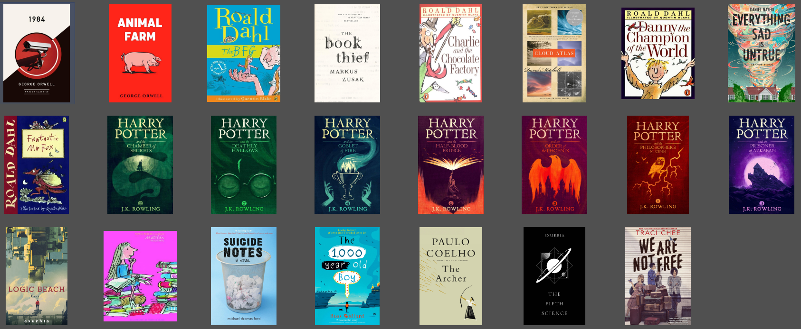
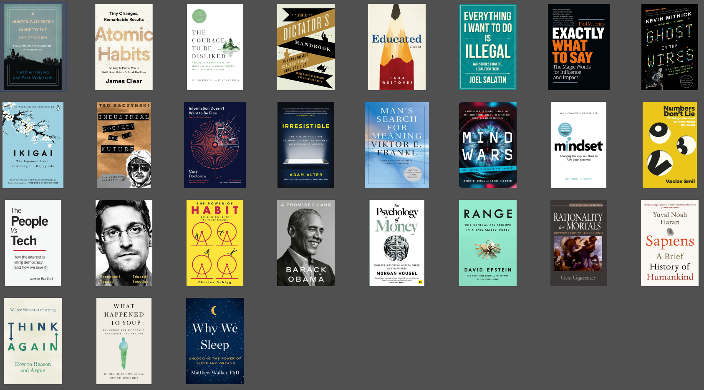

My Personal Library
This is a list of the books in my personal library.
I haven't read every book here, nor do I own all the books I've read or like. I also don't necessarily like every single book that i own.
The genre sorting might be slightly dumb, and it isn't alphabetically arranged properly, but I don't like the arrangement either.
side-note:
I am also proud to say that, All the books here are Digital! yes, all of them. Even i was suprised how many books were available
Fiction

- 1984, by George Orwell
- Animal Farm, by George Orwell
- Charlie and the Chocolate Factory, by Roald Dahl
- Cloud Atlas, by David Mitchell
- Danny the champion of the world, by Roald Dahl
- Everything Sad is Untrue, by Daniel Nayeri
- Fantastic Mr Fox, by Roald Dahl
- Harry potter and the philosophers stone, by J.K. Rowling
- Harry potter and the chamber of secrets, by J.K. Rowling
- Harry potter and the prisoner of azkaban, by J.K. Rowling
- Harry potter and the goblet of fire, by J.K. Rowling
- Harry potter and the order of phoenix, by J.K. Rowling
- Harry potter and the half-blood prince, by J.K. Rowling
- Harry potter and the deathly hallows, by J.K. Rowling
- Logic Beach part 1, by exurb1a
- Matilda, by Roald Dahl
- Suicide Notes, by Michael Thomas Ford
- The 1,000 year old boy, by Ross Welford
- The Archer, by Paulo Coelho
- The BFG, by Roald Dahl
- The Book Theif, by Markus Zusak
- The Fifth Science, by exurb1a
- We are not free, by trachi chee
Non-Fiction

- A Hunter-Gatherer's Guide to the 21st Century, by Heather Heying & Bret Weinstein
- A Promised Land, by Barack Obama
- Atomic Habits: Tiny Changes, Remarkable Results, by James Clear
- Educated, by Tara Westover
- Everything I Want to Do Is Illegal: War Stories From the Local Food Front, by Joel Salatin
- Exactly What to Say: The Magic Words for Influence and Impact, by Phil M Jones
- Ghost in the Wires, by Kevin Mitnick, Steve Wozniak & William L. Simon
- Ikigai: The Japanese Secret to a Long and Happy Life, by Héctor García & Francesc Miralles
- Industrial Society and Its Future, by Theodore Kaczynski
- Information Doesn't Want to Be Free: Laws for the Internet Age, by Cory Doctorow
- Irresistible, by Adam Alter
- Man's Search for Meaning, by Viktor E. Frankl
- Mindset - Changing The Way You think To Fulfil Your Potential, by Carol Dweck
- Mind Wars, by Marie D. Jones & Larry Flaxman
- Numbers Don't Lie, by Vaclav Smil
- Permanent Record, by Edward Snowden
- Range, by David Epstein
- Rationality for Mortals, by Gerd Gigerenzer
- Sapiens: A Brief History of Humankind, by Yuval Noah Harari
- The Courage to Be Disliked, by Ichiro Kishimi & Fumitake Koga
- The Dictator's Handbook: Why Bad Behavior is Almost Always Good Politics, by Bruce Bueno de Mesquita & Alastair Smith
- The People Vs Tech, by Jamie Bartlett
- The Power of Habit: Why We Do What We Do in Life and Business, by Charles Duhigg
- The Psychology of Money: Timeless Lessons on Wealth, Greed, and Happiness, by Morgan Housel
- Think Again: How to Reason and Argue, by Walter Sinnott-Armstrong
- What Happened to You?: Conversations on Trauma, Resilience, and Healing, by Oprah Winfrey, Bruce D. Perry
- Why We Sleep: Unlocking the Power of Sleep and Dreams, by Matthew Walker